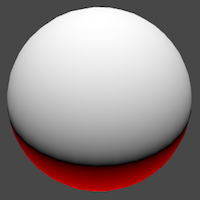
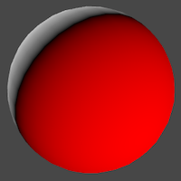
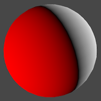
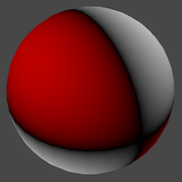

Rendering 5
Multiple Lights
- Render multiple lights per object.
- Support different light types.
- Use light cookies.
- Compute vertex lights.
- Include spherical harmonics.
This is the fifth part of a tutorial series about rendering. The previous part introduced lighting, with a single directional light. Now we'll add support for multiple lights.
This tutorials was made using Unity 5.4.0b21.
Include Files
To add support for multiple lights to our shader, we'll have to add more passes to it. These passes will end up containing nearly identical code. To prevent code duplication, we're going to move our shader code to an include file.
Unity doesn't have a menu option to create a shader include file. So you'll have to manually go to the asset folder of your project, via the file browser of your operating system. Create a My Lighting.cginc plain text file in the same folder as your lighting shader. You could do so by duplicating our shader, renaming it, and then clearing its contents.
Copy all the code of our lighting shader to this file, from right below the #pragma statements until ENDCG. Because this code is no longer directly inside a shader pass, I'll no longer indent it.
#include "UnityPBSLighting.cginc"
…
float4 MyFragmentProgram (Interpolators i) : SV_TARGET {
…
}
We can now include this file in our shader, replacing the code that used to be there. Because it's in the same folder, we can directly reference it.
CGPROGRAM #pragma target 3.0 #pragma vertex MyVertexProgram #pragma fragment MyFragmentProgram #include "My Lighting.cginc" ENDCG
Preventing Redefinitions
As you already know, include files can themselves include other include files. When you're including files that in turn include the same other file, you end up with code duplication. This will lead to compiler errors about code redefinitions.
To prevent such redefinitions, it is typical to guard include files with a definition check. This is a pre-processor check to see whether a certain definition has been made. The definition is simply a unique identifier that corresponds with the name of the include file. You can define it to be anything, even nothing. In our case, we'll use the identifier MY_LIGHTING_INCLUDED.
#define MY_LIGHTING_INCLUDED #include "UnityPBSLighting.cginc" …
Now we can put the entire contents of our include file inside a pre-processor if-block. The condition is that MY_LIGHTING_INCLUDED has not yet been defined.
#if !defined(MY_LIGHTING_INCLUDED) #define MY_LIGHTING_INCLUDED #include "UnityPBSLighting.cginc" … #endif
Typically, the code inside this include-file guard is not indented.
The Second Light
Our second light will once again be a directional light. Duplicate the main light and change its color and rotation so you can tell them apart. Also, reduce its intensity slider, for example to 0.8. Unity will use the intensity to automatically determine the main light.
Even though we have two directional lights, there is no visual difference. We can see their light independently, by having only one active at a time. But when both are active, only the main light has any effect.
A Second Pass
We see only a single light, because our shader only computes one light. The forward base pass is for the main directional light. To render an additional light, we need an additional pass.
Duplicate our shader pass code and set the new one's light mode to ForwardAdd. Unity will use this pass to render the additional light.
SubShader {
Pass {
Tags {
"LightMode" = "ForwardBase"
}
CGPROGRAM
#pragma target 3.0
#pragma vertex MyVertexProgram
#pragma fragment MyFragmentProgram
#include "My Lighting.cginc"
ENDCG
}
Pass {
Tags {
"LightMode" = "ForwardAdd"
}
CGPROGRAM
#pragma target 3.0
#pragma vertex MyVertexProgram
#pragma fragment MyFragmentProgram
#include "My Lighting.cginc"
ENDCG
}
}
We now see the secondary light, instead of the main light. Unity renders both, but the additive pass ends up overwriting the results of the base pass. This is wrong. The additive pass has to add its results to the base pass, not replace it. We can instruct the GPU to do this, by changing the blend mode of the additive pass.
How the new and old pixel data is combined is defined by two factors. The new and old data is multiplied with these factors, then added to become the final result. The default mode is no blending, which is equivalent to One Zero. The result of such a pass replaced anything that was previously in the frame buffer. To add to the frame buffer, we'll have to instruct it to use the One One blend mode. This is known as additive blending.
Tags {
"LightMode" = "ForwardAdd"
}
Blend One One
CGPROGRAM
The first time an object is rendered, the GPU checks whether a fragments ends up in front of anything else that's already been rendered to that pixel. This distance information is stored in the GPU's depth buffer, also known as the Z buffer. So each pixel has both a color and a depth. This depth represents the distance to the nearest surface from the camera, per pixel. It's like sonar.
If there's nothing in front of the fragment that we want to render, then it's currently the surface closest to the camera. The GPU goes ahead and runs the fragment program. It overwrites the pixel's color and also records its new depth.
If the fragment ends up further away than what's already there, then there's something in front of it. In that case, we cannot see it, and it won't be rendered at all.
This process is repeated for the secondary light, except now we're adding to what's already there. Once again, the fragment program is only run if nothing is in front of what we're rendering. If so, we end up at the exact same depth as the previous pass, because it's for the same object. So we end up recording the exact same depth value.
Because writing to the depth buffer twice is not necessary, let's disable it. This is done with the ZWrite Off shader statement.
Blend One One ZWrite Off
Draw Call Batches
To get a better idea of what's going on, you can enable the Stats panel at the top right corner of the game view. Look at the amount of batches, as well as those saved by batching. These represent draw calls. Do this with only the main light active.
As we have six objects, you'd expect six batches. But with dynamic batching enabled, all three cubes are combined into a single batch. So you'd expect four batches, with two saved. But you might have five batches.
The extra batch is caused by dynamic shadows. Let's eliminate it by entirely disabling shadows in the quality settings, via Edit / Project Settings / Quality. Make sure that you adjust the quality settings that you're currently using in the editor.
You might have to trigger a statistics update – for example by clicking the game view – after which the draw calls should be four, with two saved by batching. Then, activate the secondary light.
Because each object is now rendered twice, we end up with twelve batches, instead of six. This is expected. What you might not expect, is that dynamic batching is no longer working. Unfortunately, Unity's dynamic batching only works for objects that are affected by at most a single directional light. Activating the second light made this optimization impossible.
Frame Debugger
To get an even better insight into how the scene is rendered, you can use the frame debugger. Open it via Window / Frame Debugger.
When enabled, the frame debugger allows you to step through each individual draw call. The window itself shows details of each draw call. The game view will show what's rendered up to and including the selected draw call.
Preferably, opaque objects close to the camera are drawn first. This front-to-back draw order is efficient, because thanks to the depth buffer, hidden fragments will be skipped. If we would draw back-to-front instead, we'd keep overwriting pixels of more distant objects. This is known as overdraw, and should be avoided as much as possible.
Unity orders objects front-to-back, but that's not the only thing that determines the draw order. Changing GPU state is also expensive, and should be minimized too. This is done by rendering similar objects together. For example, Unity prefers to render the spheres and cubes in groups, because then it doesn't have to switch between meshes as often. Likewise, Unity prefers to group objects that use the same material.
Point Lights
Directional lights are not the only types of light. Let's add a point light, via GameObject / Light / Point Light.
To get a good look at it, disable both directional lights. Then move the point light around a bit.
The light behaves very strange. What's going on? When you use the frame debugger, you'll notice that our objects are first rendered solid black, then again with the weird light.
The first pass is the base pass. It is always rendered, even though there isn't an active directional light. So we end up with a black silhouettes.
The second pass is our additive pass again. This time, it uses a point light instead of a directional light. But our code still assumes a directional light. We have to fix this.
Light Function
Because our light is about to become more complex, let's move the code that creates it to a separate function. Place this function directly above the MyFragmentProgram function.
UnityLight CreateLight (Interpolators i) {
UnityLight light;
light.dir = _WorldSpaceLightPos0.xyz;
light.color = _LightColor0.rgb;
light.ndotl = DotClamped(i.normal, light.dir);
return light;
}
Now we can simplify MyFragmentProgram.
float4 MyFragmentProgram (Interpolators i) : SV_TARGET {
i.normal = normalize(i.normal);
// float3 lightDir = _WorldSpaceLightPos0.xyz;
float3 viewDir = normalize(_WorldSpaceCameraPos - i.worldPos);
// float3 lightColor = _LightColor0.rgb;
float3 albedo = tex2D(_MainTex, i.uv).rgb * _Tint.rgb;
float3 specularTint;
float oneMinusReflectivity;
albedo = DiffuseAndSpecularFromMetallic(
albedo, _Metallic, specularTint, oneMinusReflectivity
);
// UnityLight light;
// light.color = lightColor;
// light.dir = lightDir;
// light.ndotl = DotClamped(i.normal, lightDir);
UnityIndirect indirectLight;
indirectLight.diffuse = 0;
indirectLight.specular = 0;
return UNITY_BRDF_PBS(
albedo, specularTint,
oneMinusReflectivity, _Smoothness,
i.normal, viewDir,
CreateLight(i), indirectLight
);
}
Light Position
The _WorldSpaceLightPos0 variable contains the current light's position. But in case of a directional light, it actually holds the direction towards the light. Now that we're using a point light, the variable really contains the data that its name suggests. So we have to compute the light direction ourselves. This is done by subtracting the fragment's world position and normalizing the result.
light.dir = normalize(_WorldSpaceLightPos0.xyz - i.worldPos);
Light Attenuation
In case of a directional light, knowing its direction is enough. It is assumed to be infinitely far away. But a point light has an explicit position. This means that its distance to the object's surface can also have an effect. The further away a light, the dimmer it gets. This is known as the light's attenuation.
In case of a direction light, the attenuation is assumed to vary so slowly that we can treat it as constant. So we don't bother with it. But what does the attenuation of a point light look like?
Imagine a point from which we emit a single burst of photons. These photons move in all directions. As time passes, the photons move further away from the point. As they all travel at the same velocity, the photons act as the surface of a sphere, which has the point at its center. The radius of this sphere increases as the photons keep moving. As the sphere grows, so does its surface. But this surface always contains the same amount of photons. So the density of the photons decreases. This determines the brightness of the observed light.
The surface area of a sphere with radius `r` is equal to `4 pi r^2`. To determine the photon density, we can divide by that. We can ignore the constant `4 pi`, as we can just assume that's factored into the light's intensity. That leads to an attenuation factor of `1 / d^2` where `d` is the light's distance.
UnityLight CreateLight (Interpolators i) {
UnityLight light;
light.dir = normalize(_WorldSpaceLightPos0.xyz - i.worldPos);
float3 lightVec = _WorldSpaceLightPos0.xyz - i.worldPos;
float attenuation = 1 / (dot(lightVec, lightVec));
light.color = _LightColor0.rgb * attenuation;
light.ndotl = DotClamped(i.normal, light.dir);
return light;
}
This produces extremely bright results close to the light. This happens because the attenuation factor shoots to infinity when the distance approaches zero. To make sure that the light's intensity is at its maximum at a distance of zero, change the attenuation equation to `1 / (1 + d^2)`.
float attenuation = 1 / (1 + dot(lightVec, lightVec));
Light Range
In real life, photons keep moving until they hit something. This means that a light's range is potentially infinite, even though it becomes so weak that we can no longer see it. But we don't want to waste time rendering lights that we cannot see. So we'll have to stop rendering them at some point.
Point lights and spotlights have a range. Objects that lie inside this range will get a draw call with this lights. All other objects won't. The default range is 10. The smaller this range, the fewer objects get an extra draw call, which leads to higher frame rates. Set our light's range to 1 and move it around.
You'll clearly see when objects come in and out of range, as they'll suddenly switch between being lit and unlit. This happens because the light would still be visible beyond the range that we chose. To fix this, we have to ensure that the attenuation and range are synchronized.
Realistically, light has no maximum range. So any range that we set is artistic liberty. Our objective then becomes to make sure that there is no sudden light transition when objects move out of range. This requires that the attenuation factor reaches zero at maximum range.
Unity determines a point light's attenuation by transforming the fragment's world position into a light space position. This is a point in the local space of the light object, scaled by its attenuation. In this space, the point light sits at the origin. Anything that's more than one unit away from it is out of range. So the square distance from the origin defines the scaled attenuation factor.
Unity goes one step further, and uses the squared distance to sample a falloff texture. This is done to ensure that the attenuation drops to zero a bit early. Without this step, you could still get light popping when objects move in or out of range.
The code for this technique is found in the AutoLight include file. Let's use that instead of writing it ourselves.
#include "AutoLight.cginc" #include "UnityPBSLighting.cginc"
We can now access the UNITY_LIGHT_ATTENUATION macro. This macro inserts the code to compute the correct attenuation factor. It has three parameters. The first is the name of the variable that will contain the attenuation. We'll use attenuation for that. The second parameter has something to do with shadows. As we don't support those yet, just use zero. And the third parameter is the world position.
Note that the macro defines the variable in the current scope. So we shouldn't declare it ourselves anymore.
UnityLight CreateLight (Interpolators i) {
UnityLight light;
light.dir = normalize(_WorldSpaceLightPos0.xyz - i.worldPos);
// float3 lightVec = _WorldSpaceLightPos0.xyz - i.worldPos;
// float attenuation = 1 / (dot(lightVec, lightVec));
UNITY_LIGHT_ATTENUATION(attenuation, 0, i.worldPos);
light.color = _LightColor0.rgb * attenuation;
light.ndotl = DotClamped(i.normal, light.dir);
return light;
}
After using this macro, it looks like attenuation doesn't work anymore. That's because there are multiple versions of it, one per light type. By default, it's for the directional light, which has no attenuation at all.
The correct macro is only defined when it is known that we're dealing with a point light. To indicate this, we have to #define POINT before including AutoLight. As we're only dealing with point lights in our additive pass, define it there, before we include My Lighting.
Pass {
Tags {
"LightMode" = "ForwardAdd"
}
Blend One One
ZWrite Off
CGPROGRAM
#pragma target 3.0
#pragma vertex MyVertexProgram
#pragma fragment MyFragmentProgram
#define POINT
#include "My Lighting.cginc"
ENDCG
}
Mixing Lights
Turn off the point light and activate our two directional lights again.
There's something wrong. We're interpreting their light directions as positions. And the secondary directional light – rendered by the additive pass – is completely treated as if it were a point light. To solve this, we have to create shader variants for the different light types.
Shader Variants
Check our shader in the inspector. The dropdown menu under the Compile and show code button contains a section that tells us how many shader variants it currently has. Click the Show button to get an overview of them.
// Total snippets: 2 // ----------------------------------------- // Snippet #0 platforms ffffffff: Just one shader variant. // ----------------------------------------- // Snippet #1 platforms ffffffff: Just one shader variant.
The file that is opened tells us that we have two snippets, each with one shader variant. These are our base and additive passes.
We want to create two shader variants for our additive pass. One for directional lights, and one for point lights. We do this by adding a multi-compile pragma statement to the pass. This statement defines a list of keywords. Unity will create multiple shader variants for us, each defining one of those keywords.
Each variant is a separate shader. They are compiled individually. The only difference between them is which keywords are defined.
In this case, we need DIRECTIONAL and POINT, and we should no longer define POINT ourselves.
Pass {
Tags {
"LightMode" = "ForwardAdd"
}
Blend One One
ZWrite Off
CGPROGRAM
#pragma target 3.0
#pragma multi_compile DIRECTIONAL POINT
#pragma vertex MyVertexProgram
#pragma fragment MyFragmentProgram
// #define POINT
#include "My Lighting.cginc"
ENDCG
}
Summon the shader variant overview again. This time, the second snippet will contain two variants, as we requested.
// Total snippets: 2 // ----------------------------------------- // Snippet #0 platforms ffffffff: Just one shader variant. // ----------------------------------------- // Snippet #1 platforms ffffffff: DIRECTIONAL POINT 2 keyword variants used in scene: DIRECTIONAL POINT
Using Keywords
We can check which of these keywords exist, just like AutoLight does for POINT. In our case, if POINT is defined, then we have to compute the light direction ourselves. Otherwise, we have a directional light and _WorldSpaceLightPos0 is the direction.
UnityLight CreateLight (Interpolators i) {
UnityLight light;
#if defined(POINT)
light.dir = normalize(_WorldSpaceLightPos0.xyz - i.worldPos);
#else
light.dir = _WorldSpaceLightPos0.xyz;
#endif
float3 lightVec = _WorldSpaceLightPos0.xyz - i.worldPos;
UNITY_LIGHT_ATTENUATION(attenuation, 0, i.worldPos);
light.color = _LightColor0.rgb * attenuation;
light.ndotl = DotClamped(i.normal, light.dir);
return light;
}
This works for our two additive pass variants. It also works for the base pass, because it doesn't define POINT.
Unity decides which variant to use based on the current light and the shader variant keywords. When rendering a directional light, it uses the DIRECTIONAl variant. When rendering a point light, it uses the POINT variant. And when there isn't a match, it just picks the first variant from the list.
Spotlights
Besides directional and point lights, unity also supports spotlights. Spotlights are like point lights, except that they are restricted to a cone, instead of shining in all directions.
To support spotlights as well, we have to add SPOT to the keyword list of our multi-compile statement.
#pragma multi_compile DIRECTIONAL POINT SPOT
Our additive shader now has three variants.
// Snippet #1 platforms ffffffff: DIRECTIONAL POINT SPOT 3 keyword variants used in scene: DIRECTIONAL POINT SPOT
Spotlights have a position, just like point lights. So when either POINT or SPOT is defined, we have to compute the light direction.
#if defined(POINT) || defined(SPOT) light.dir = normalize(_WorldSpaceLightPos0.xyz - i.worldPos); #else light.dir = _WorldSpaceLightPos0.xyz; #endif
This was already enough to get spotlights to work. They end up with a different UNITY_LIGHT_ATTENUATION macro, which takes care of the cone shape.
The attenuation approach starts identical to that of a point light. Convert to light space, then compute the attenuation factor. Then, force the attenuation to zero for all points that lie behind the origin. That limits the light to everything in front of the spotlight.
Then the X and Y coordinates in light space are used as UV coordinates to sample a texture. This texture is used to mask the light. The texture is simply a circle with a blurred edge. This produces a light cylinder. To turn it into a cone, the conversion to light space is actually a perspective transformation, and uses homogeneous coordinates.
Spotlight Cookies
The default spotlight mask texture is a blurry circle. But you could use any square texture, as longs as it drops to zero at its edges. These textures are known as spotlight cookies. This name is derived from cucoloris, which refers to a film, theatre, or photography prop that adds shadows to a light.
The alpha channel of cookies is used to mask the light. The other channels don't matter. Here's an example texture, which has all four channels set to the same value.
When importing the texture, you can select Cookie as its type. Then you also have to set its light type, in this case Spotlight. Unity will then take care of most other settings for you.
You can now use this texture as a custom cookie for your spotlight.
More Cookies
Directional lights can have cookies too. These cookies are tiled. So they don't need to fade to zero at their edge. Instead, they have to tile seamlessly.
Cookies for directional lights have a size. This determines their visual size, which in turn affects how quickly they tile. The default is 10, but a small scene requires a much smaller scale, like 1.
Directional lights with cookies also have to perform a conversion to light space. As such, it has its own UNITY_LIGHT_ATTENUATION macro. Thus, Unity treats it as a different light type than a directional light without a cookie. So they'll always be rendered by the additive pass, using the DIRECTIONAL_COOKIE keyword.
#pragma multi_compile DIRECTIONAL DIRECTIONAL_COOKIE POINT SPOT
Cookies for Point Lights
Point lights can also have cookies. In this case, the light goes in all directions, so the cookie has to wrap around a sphere. This is done by using a cube map.
You can use various texture formats to create a point light cookie, and Unity will convert it to a cube map. You'll have to specify the Mapping so Unity knows how to interpret your image. The best method is to provide a cube map yourself, in which case you can suffice with the automatic mapping mode.
Point light cookies don't have any additional settings.
At this point, we'll have to add the POINT_COOKIE keyword to our multi-compile statement. It is becoming quite a long list. Because it is such a common list, Unity provides us with a shorthand pragma statement that we can use instead.
#pragma multi_compile_fwdadd// #pragma multi_compile DIRECTIONAL DIRECTIONAL_COOKIE POINT SPOT
You can verify that this indeed produces the five variants that we need.
// Snippet #1 platforms ffffffff: DIRECTIONAL DIRECTIONAL_COOKIE POINT POINT_COOKIE SPOT 5 keyword variants used in scene: POINT DIRECTIONAL SPOT POINT_COOKIE DIRECTIONAL_COOKIE
And don't forget to compute the light direction for point lights with a cookie as well.
#if defined(POINT) || defined(POINT_COOKIE) || defined(SPOT) light.dir = normalize(_WorldSpaceLightPos0.xyz - i.worldPos); #else light.dir = _WorldSpaceLightPos0.xyz; #endif
Vertex Lights
Every visible object always gets rendered with its base pass. This pass takes care of the main directional light. Every additional light will add an extra additive pass on top of that. Thus, many lights will result in many draw calls. Many lights with many objects in their range will result in a whole lot of draw calls.
Take for example a scene with four point lights and six objects. All objects are in range of all four lights. This requires five draw calls per object. One for the base pass, plus the four additive passes. That's 30 draw calls in total. Note that you could add a single directional light to that, without increasing the draw calls.
To keep the amount of draw calls in check, you can limit the Pixel Light Count via the quality settings. This defines the maximum amount of pixels lights used per object. Lights are referred to as pixel lights, when they are computed per fragment.
Higher quality levels allow more pixel lights. The default of the highest quality level is four pixel lights.
Which lights are rendered is different for each object. Unity orders lights from most to least significant, based on their relative intensity and distance. The lights that are expected to contribute the least are discarded first.
Actually, a few more things happen, but we'll get to that later.
Because different objects are affected by different lights, you'll get inconsistent lighting. This gets worse when things are in motion, as it can result in sudden changes in lighting.
The problem is so bad, because lights are completely switched off. Fortunately, there is another way to render lights much cheaper, without completely turning them off. We can render them per vertex, instead of per fragment.
Rendering a light per vertex means that you perform the lighting calculations in the vertex program. The resulting color is then interpolated and passed to the fragment program. This is so cheap, that Unity includes such lights in the base pass. When this happens, Unity looks for a base pass shader variant with the VERTEXLIGHT_ON keyword.
Vertex lighting is only supported for point lights. So directional lights and spot lights cannot be vertex lights.
To use vertex lights, we have to add a multi-compile statement to our base pass. It only needs a single keyword, VERTEXLIGHT_ON. The other option is simply no keyword at all. To indicate that, we have to use _.
Pass {
Tags {
"LightMode" = "ForwardBase"
}
CGPROGRAM
#pragma target 3.0
#pragma multi_compile _ VERTEXLIGHT_ON
#pragma vertex MyVertexProgram
#pragma fragment MyFragmentProgram
#include "My Lighting.cginc"
ENDCG
}
One Vertex Light
To pass the color of the vertex light to the fragment program, we have to add it to our Interpolators struct. This is of course only necessary when the VERTEXLIGHT_ON keyword is defined.
struct Interpolators {
float4 position : SV_POSITION;
float2 uv : TEXCOORD0;
float3 normal : TEXCOORD1;
float3 worldPos : TEXCOORD2;
#if defined(VERTEXLIGHT_ON)
float3 vertexLightColor : TEXCOORD3;
#endif
};
Let's create a separate function to compute this color. It both reads from and writes to the interpolators, so that becomes an inout parameter.
void ComputeVertexLightColor (inout Interpolators i) {
}
Interpolators MyVertexProgram (VertexData v) {
Interpolators i;
i.position = mul(UNITY_MATRIX_MVP, v.position);
i.worldPos = mul(unity_ObjectToWorld, v.position);
i.normal = UnityObjectToWorldNormal(v.normal);
i.uv = TRANSFORM_TEX(v.uv, _MainTex);
ComputeVertexLightColor(i);
return i;
}
For now, we'll simply pass along the color of the first vertex light. We can only do this when the light exists. Otherwise we keep doing nothing. UnityShaderVariables defines an array of vertex light colors. These are RGBA colors, but we only need the RGB part.
void ComputeVertexLightColor (inout Interpolators i) {
#if defined(VERTEXLIGHT_ON)
i.vertexLightColor = unity_LightColor[0].rgb;
#endif
}
In the fragment program, we have to add this color to all the other lights that we compute there. We can do this by treating the vertex light color as indirect light. Move the creation of the indirect lighting data to its own function. In there, assign the vertex light color to the indirect diffuse component, if it exists.
UnityIndirect CreateIndirectLight (Interpolators i) {
UnityIndirect indirectLight;
indirectLight.diffuse = 0;
indirectLight.specular = 0;
#if defined(VERTEXLIGHT_ON)
indirectLight.diffuse = i.vertexLightColor;
#endif
return indirectLight;
}
float4 MyFragmentProgram (Interpolators i) : SV_TARGET {
i.normal = normalize(i.normal);
float3 viewDir = normalize(_WorldSpaceCameraPos - i.worldPos);
float3 albedo = tex2D(_MainTex, i.uv).rgb * _Tint.rgb;
float3 specularTint;
float oneMinusReflectivity;
albedo = DiffuseAndSpecularFromMetallic(
albedo, _Metallic, specularTint, oneMinusReflectivity
);
// UnityIndirect indirectLight;
// indirectLight.diffuse = 0;
// indirectLight.specular = 0;
return UNITY_BRDF_PBS(
albedo, specularTint,
oneMinusReflectivity, _Smoothness,
i.normal, viewDir,
CreateLight(i), CreateIndirectLight(i)
);
}
Set the pixel light count to zero. Every object should now be rendered as a silhouette with the color of a single light.
Unity supports up to four vertex lights this way. The positions of these lights are stored in four float4 variables, one per coordinate. They are unity_4LightPosX0, unity_4LightPosY0, and unity_4LightPosZ0, and they are defined in UnityShaderVariables. The first components of these variables contain the position of the first vertex light.
void ComputeVertexLightColor (inout Interpolators i) {
#if defined(VERTEXLIGHT_ON)
float3 lightPos = float3(
unity_4LightPosX0.x, unity_4LightPosY0.x, unity_4LightPosZ0.x
);
i.vertexLightColor = unity_LightColor[0].rgb;
#endif
}
Next, we compute the light vector, the light direction, and the ndotl factor. We cannot use the UNITY_LIGHT_ATTENUATION macro here, so let's just use `1 / (1 + d^2)` again. This leads to the final color.
void ComputeVertexLightColor (inout Interpolators i) {
#if defined(VERTEXLIGHT_ON)
float3 lightPos = float3(
unity_4LightPosX0.x, unity_4LightPosY0.x, unity_4LightPosZ0.x
);
float3 lightVec = lightPos - i.worldPos;
float3 lightDir = normalize(lightVec);
float ndotl = DotClamped(i.normal, lightDir);
float attenuation = 1 / (1 + dot(lightVec, lightVec));
i.vertexLightColor = unity_LightColor[0].rgb * ndotl * attenuation;
#endif
}
Note that this is just a diffuse term. While we could compute the specular term as well, it will look very bad when interpolating it across large triangles.
Actually, UnityShaderVariables provides another variable, unity_4LightAtten0. It contains factors to help approximate the attenuation of the pixel lights. Using this, our attenuation become `1 / (1 + d^2 a`.
float attenuation = 1 / (1 + dot(lightVec, lightVec) * unity_4LightAtten0.x);
Four Vertex Lights
To include all four vertex lights that Unity supports, we have to perform the same vertex-light computations four times, and add the results together. Instead of writing all the code ourselves, we can use the Shade4PointLights function, which is defined in UnityCG. We have to feed it the position vectors, light colors, attenuation factors, plus the vertex position and normal.
void ComputeVertexLightColor (inout Interpolators i) {
#if defined(VERTEXLIGHT_ON)
i.vertexLightColor = Shade4PointLights(
unity_4LightPosX0, unity_4LightPosY0, unity_4LightPosZ0,
unity_LightColor[0].rgb, unity_LightColor[1].rgb,
unity_LightColor[2].rgb, unity_LightColor[3].rgb,
unity_4LightAtten0, i.worldPos, i.normal
);
#endif
}
Now up to four lights will be included as vertex lights, if an objects ends up with more lights than the pixel light count. Actually, Unity tries to hide the transitions between pixel and vertex lights by including one light as both a pixel and a vertex light. That light is included twice, with varying intensity for its vertex and pixel versions.
By default, Unity decides which lights become pixel lights. You can override this by changing a light's Render Mode. Important lights are always rendered as pixel lights, regardless of the limit. Lights that are not important are never rendered as pixel lights.
Spherical Harmonics
When we've used up all pixel lights and all vertex lights, we can fall back to yet another method of rendering lights. We can use spherical harmonics. This is supported for all three light types.
The idea behind spherical harmonics is that you can describe all incoming light at some point with a single function. This function is defined on the surface of a sphere.
Typically, this function is described with spherical coordinates. But you can use 3D coordinates as well. That allows us to use our object's normal vector to sample the function.
To create such a function, you'd have to sample the light intensity in all directions, then figure out how to turn that into a single, continuous function. To be perfect, you'd have to do this for every point on every object's surface. This is of course not possible. We'll have to suffice with an approximation.
First, we'll only define the function from the point of view of the object's local origin. This is fine for lighting conditions that don't change much along the surface of the object. This is true for small objects, and lights that are either weak or far away from the object. Fortunately, this is typically the case for lights that don't qualify for pixel or vertex light status.
Second, we also have to approximate the function itself. You can decompose any continuous function into multiple functions of different frequencies. These are known as bands. For an arbitrary function, you might need an infinite amount of bands to do this.
A simple example is composing sinusoids. Start with a basic sine wave.
This is the first band. For the second band, use a sine wave with double the frequency, and half the amplitude.
When added together, these two bands describe a more complex function.
You can keep adding bands like this, doubling the frequency and halving the amplitude each step.
Each band that you add makes the function more complex.
This example used regular sine waves with a fixed pattern. To describe an arbitrary function with sine waves, you'd have to adjust the frequency, amplitude, and offset of each band until you get a perfect match.
If you use less bands than needed for a perfect match, you end up with an approximation of the original function. The fewer bands you use, the less accurate the approximation gets. This technique is used to compress lots of things, like sound and image data. In our case, we'll use it to approximate 3D lighting.
The bands with the lowest frequencies correspond with the large features of the function. We definitely want to keep those. So we'll discard the bands with higher frequencies. This means that we lose the details of our lighting function. This is fine if the lighting doesn't vary quickly, so once again we'll have to limit ourselves to diffuse light only.
Spherical Harmonics Bands
The simplest approximation of lighting is a uniform color. The lighting is the same in all directions. This is the first band, which we'll identify as `Y_0^0`. It is defined by a single sub-function, which is simply a constant value.
The second band introduces linear directional light. For each axis, it describes where most of the light is coming from. As such, it is split into three functions, identified with `Y_1^-1`, `Y_1^0`, and `Y_1^1`. Each function includes one of our normal's coordinates, multiplied by a constant.
The third band gets more complex. It consists of five functions, `Y_2^-2` … `Y_2^2`. These functions are quadratic, meaning that they contain the product of two of our normal's coordinates.
We could keep going, but Unity uses only these first three bands. Here they are, in a table. All terms should be multiplied by ` 1 / (2 sqrt pi)`.
| -2 | -1 | 0 | 1 | 2 | |
|---|---|---|---|---|---|
| 0 | `1` | ||||
| 1 | `-y sqrt 3` | `z sqrt 3` | `-x sqrt 3` | ||
| 2 | `xy sqrt 15` | `-yz sqrt 15` | `(3z^2 - 1) sqrt 5 / 2` | `-xz sqrt 15` | `(x^2 - y^2) sqrt 15 / 2` |
This is really a single function, split so you can identify its sub-functions. The final result is all nine terms added together. Different lighting conditions are created by modulating each of the nine terms, with an additional factor.
So we can represent an approximation of any lighting condition with nine factors. As these are RGB colors, we end up with 27 numbers. And we can merge the constant parts of the function into those factors too. That leads to our final function, `a + by + cz + dx + exy + fyz + gz^2 + hxz + i(x^2 - y^2)`, where `a` through `i` are the factors.
You can visualize the normal coordinates to get a sense of which directions the terms represent. For example, here's a way to color positive coordinates white and negative coordinates red.
float t = i.normal.x; return t > 0 ? t : float4(1, 0, 0, 1) * -t;
You can then visualize each term by using i.normal.x, and i.normal.x * i.normal.y, and so on.
  

y, z, x,
xy, yz, zz, xz, xx - yy.
Using Spherical Harmonics
Every light that gets approximated by spherical harmonics has to be factored into the 27 numbers. Fortunately, Unity can do this very quickly. The base pass can access them via a set of seven float4 variables, defined in UnityShaderVariables.
UnityCG contains the ShadeSH9 function, which computes lighting based on the spherical harmonics data, and a normal parameter. It expects a float4 parameter, with its fourth component set to 1.
To get a good look at the final approximation, directly return the result of ShadeSH9 in the fragment program.
float3 shColor = ShadeSH9(float4(i.normal, 1)); return float4(shColor, 1); return UNITY_BRDF_PBS( albedo, specularTint, oneMinusReflectivity, _Smoothness, i.normal, viewDir, CreateLight(i), CreateIndirectLight(i) );
Now turn off all lights.
Surprise! Our objects aren't black anymore. They have picked up the ambient color. Unity uses spherical harmonics to add the scene's ambient color to objects.
Now activate a bunch of lights. Make sure that there are enough so all pixel and vertex lights are used up. The rest are added to the spherical harmonics. Again, Unity will split a light to blend the transition.
Just like with vertex lights, we'll add the spherical harmonics light data to the diffuse indirect light. Also, let's make sure that it never contributes any negative light. It's an approximation, after all.
UnityIndirect CreateIndirectLight (Interpolators i) {
UnityIndirect indirectLight;
indirectLight.diffuse = 0;
indirectLight.specular = 0;
#if defined(VERTEXLIGHT_ON)
indirectLight.diffuse = i.vertexLightColor;
#endif
indirectLight.diffuse += max(0, ShadeSH9(float4(i.normal, 1)));
return indirectLight;
}
float4 MyFragmentProgram (Interpolators i) : SV_TARGET {
…
// float3 shColor = ShadeSH9(float4(i.normal, 1));
// return float4(shColor, 1);
return UNITY_BRDF_PBS(
albedo, specularTint,
oneMinusReflectivity, _Smoothness,
i.normal, viewDir,
CreateLight(i), CreateIndirectLight(i)
);
}
But we must only do this in the base pass. As spherical harmonics are independent of the vertex lights, we cannot rely on the same keyword. Instead, we'll check whether FORWARD_BASE_PASS is defined.
#if defined(FORWARD_BASE_PASS) indirectLight.diffuse += max(0, ShadeSH9(float4(i.normal, 1))); #endif
This eliminates spherical harmonics again, because FORWARD_BASE_PASS is defined nowhere. If you have the pixel light count set to zero, only the vertex lights are visible.
Define FORWARD_BASE_PASS in the base pass, before including My Lighting. Now our code knows when we're in the base pass.
Pass {
Tags {
"LightMode" = "ForwardBase"
}
CGPROGRAM
#pragma target 3.0
#pragma multi_compile _ VERTEXLIGHT_ON
#pragma vertex MyVertexProgram
#pragma fragment MyFragmentProgram
#define FORWARD_BASE_PASS
#include "My Lighting.cginc"
ENDCG
}
Our shader finally includes both vertex lights and spherical harmonics. And if you make sure that the pixel light count is greater than zero, you'll see all three lighting methods combined.
Skybox
If spherical harmonics includes the solid ambient color, can it also work with an environmental skybox? Yes! Unity will approximate that skybox with spherical harmonics as well. To try this out, turn off all lights, then select the default skybox for environmental lighting. New scenes use this skybox by default, but we removed it in an earlier tutorial.
Unity now renders the skybox in the background. It is a procedurally generated skybox, based on the main directional light. As we have no active light, it behaves as if the sun sits at the horizon. You can see that the objects have picked up some of the color of the skybox, which results in some subtle shading. This is all done via spherical harmonics.
Turn on the main directional light. This will change the skybox a lot. You might be able to notice that the spherical harmonics change a little later than the skybox. That's because Unity needs some time to approximate the skybox. This is only really noticeable when it changes abruptly.
The objects suddenly became a lot brighter! The ambient contribution is very strong. The procedural skybox represents a perfect sunny day. In these conditions, completely white surfaces will appear very bright indeed. And this effect will be strongest when rendering in gamma space. There aren't many perfectly white surfaces in real life, they're typically much darker.
The next tutorial is Bumpiness.